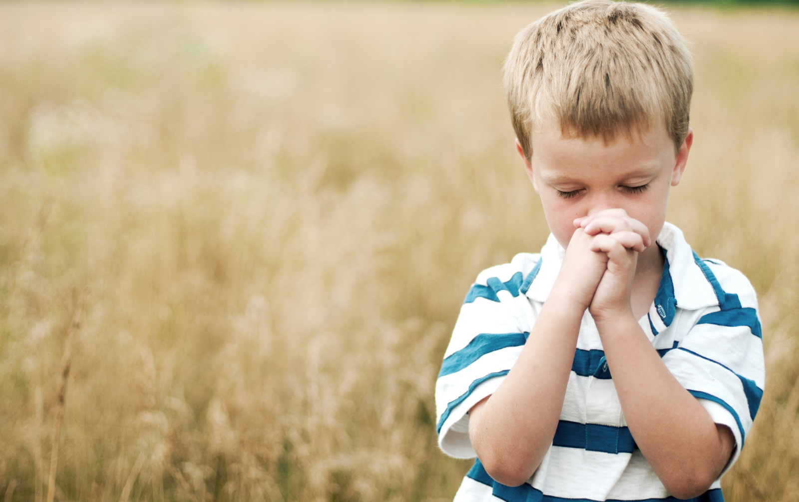
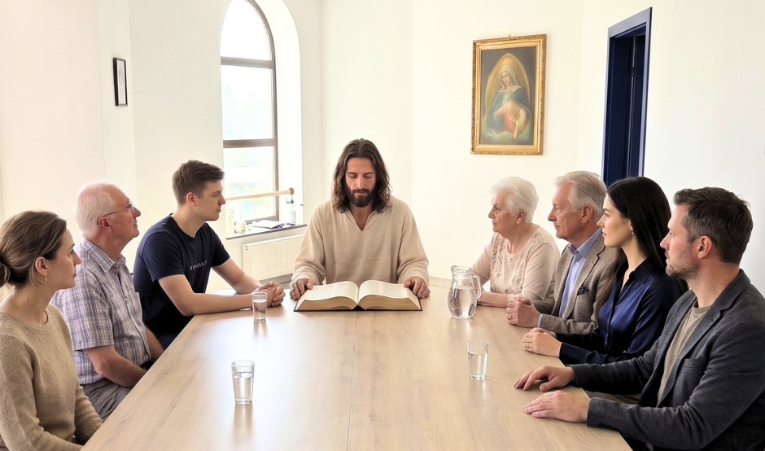
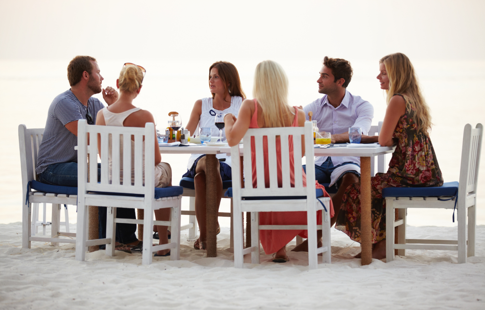

Modlitwa
Zaczynamy od zwrócenia się do Boga. Jest przestrzeń na modlitwę wspólnotową i wstawienniczą oraz uwielbienie.
Modlimy się. Czytamy Pismo Święte. Rozmawiamy o tym, co Słowo Boże mówi do naszego życia.

Jesteśmy grupą ludzi, którzy pragną żyć Ewangelią na co dzień i wzrastać w wierze poprzez modlitwę, formację i wspólne działania.
Jesteśmy otwarci na każdego, kto chce pogłębić swoją relację z Bogiem i budować więzi w duchu chrześcijańskiej miłości.
Chcemy wdrażać Ewangelię w praktyce, tworząc relacje oparte na zaufaniu i miłości, która pomaga przetrwać różne życiowe „burze na jeziorze”.
Wierzymy, że każdy powinien mieć możliwość poznania wiary chrześcijańskiej, móc zadać pytania i podzielić się swoim punktem widzenia. Niezależnie od miejsca, w którym się znajduje.
Alpha to seria spotkań, które pomagają odkrywać podstawy wiary chrześcijańskiej. Każde spotkanie podejmuje inne pytanie, otwierając przestrzeń do szczerej rozmowy. Zawsze zaczynamy posiłkiem, potem jest krótki wykład i dyskusja. Kurs jest bezpłatny i otwarty dla każdego.
Każde spotkanie ma swój rytm. Zatrzymujemy się, słuchamy, a potem wspólnie szukamy znaczenia Słowa dla naszej codzienności.

Zaczynamy od zwrócenia się do Boga. Jest przestrzeń na modlitwę wspólnotową i wstawienniczą oraz uwielbienie.
Czytamy Słowo Boże i szukamy jego głębi, wierząc, że Bóg chce mówić także do naszych konkretnych historii.

Dzielimy się tym, co usłyszeliśmy i przeżywamy. Słuchamy siebie nawzajem w atmosferze otwartości i szacunku.
Organizujemy i prowadzimy modlitwę uwielbienia, ucząc się wdzięczności i otwierania serca na Boga.
Modlimy się wspólnie i wstawiamy się za potrzebami osób ze wspólnoty oraz naszych bliskich.
Tworzymy przestrzeń do rozwoju osobistego i duchowego oraz odnajdywania swojego miejsca w Kościele i społeczeństwie.
Nie musisz wszystkiego wiedzieć. Przyjdź z pytaniami, z ciekawością albo po prostu z potrzebą spotkania z drugim człowiekiem.
Napisz do nas